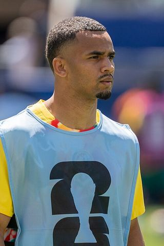

Ezzcoins › Player pages › Iliman Ndiaye

82
LM

Ndiaye
PAC86
SHO77
PAS74
DRI86
DEF44
PHY65
PlayStyles
TricksterQuick StepIliman Ndiaye
82 LM · Manchester City · Premier League ·  Senegal
Senegal
1,000Recent console price
83Meta rating · LM +1 vs overall
LM83RM83RW82LW82
PAC86
SHO77
PAS74
DRI86
DEF44
PHY65
Chemistry style
Turn on JavaScript to see this card with each chemistry style.
- Position
- LM (also RM, RW, LW)
- Club
- Manchester City
- League
- Premier League
- Nation
- Senegal
- Skill moves
- 4★
- Weak foot
- 4★
- Preferred foot
- Right
- Height
- 180 cm
- Age
- 26
Meta rating: Ezzcoins' own estimate of how well this card plays in game, worked out from its stats for each position it can play, its skill moves, weak foot and PlayStyle+. An average card scores about its overall rating; higher means it plays above its rating.
Watch on EzzcoinsMore from Manchester City
- 91
 Erling HaalandST
Erling HaalandST - 90
 Khadija ShawST
Khadija ShawST - 90
 RodriCDM
RodriCDM - 89
 Gianluigi DonnarummaGK
Gianluigi DonnarummaGK - 88
 Yui HasegawaCDM
Yui HasegawaCDM - 87
 Lauren HempLM
Lauren HempLM - 87
 Rúben DiasCB
Rúben DiasCB - 87
 Vivianne MiedemaCAM
Vivianne MiedemaCAM